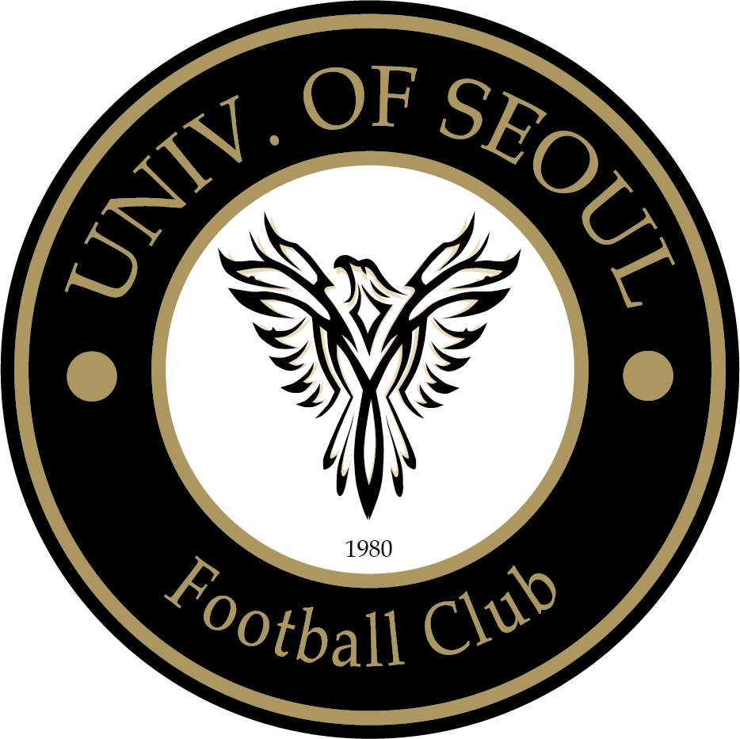

AMA-wiki
중앙동아리 아마축구부 소개
홈
동아리 소개
YB 선수 소개
OB 선수 소개
아마축구부
서울시립대 유일무이 중앙축구동아리
주요 활동
매주 금요일 정기훈련, OBYB 교류전, 각종 대회 참가 및 주최 등등
소셜 플랫폼
유튜브 바로가기
인스타그램 바로가기
로고 의미
원(circle)
은 아마추어의 순수성을 상징
장산곶매
는 서울시립대학교의 상징동물로, 자유와 자주성을 상징
금색 테두리
는 변하지 않는 깊은 가치와 전통을 의미
아마축구부는
자유
를 중시하고
스포츠 본연의 가치
를 추구하는 축구 동아리입니다.